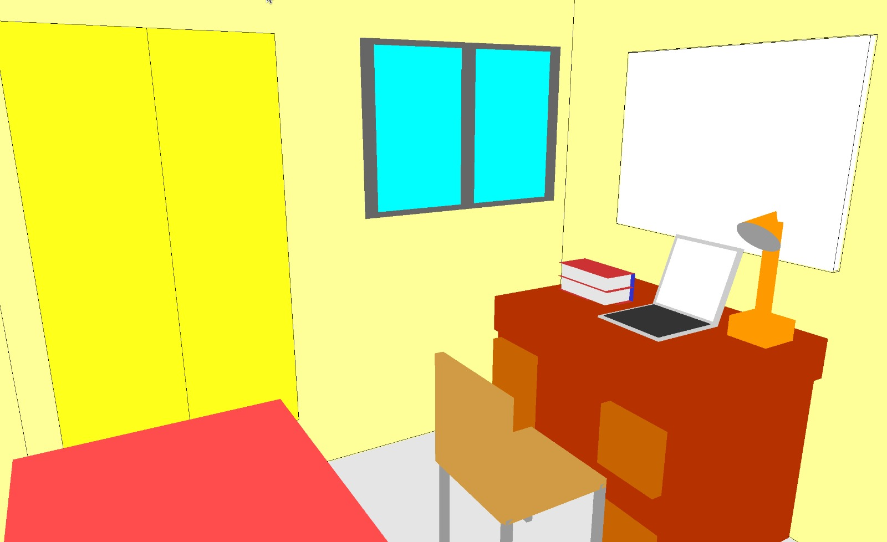
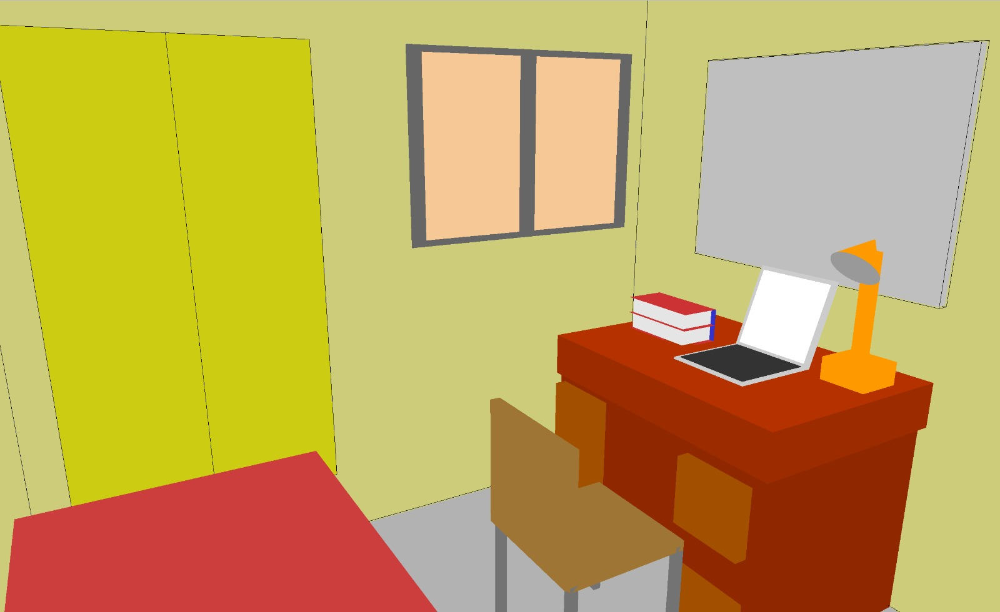
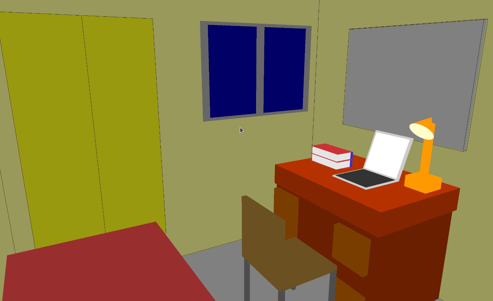
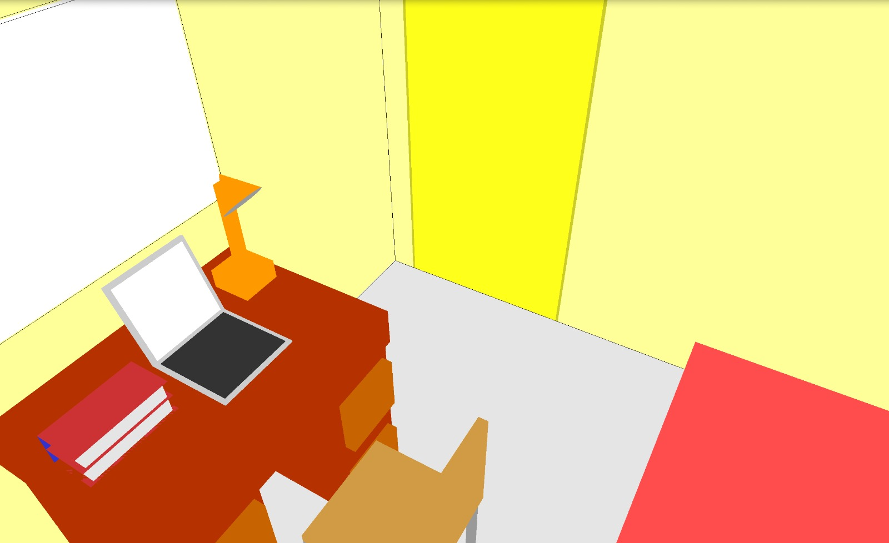
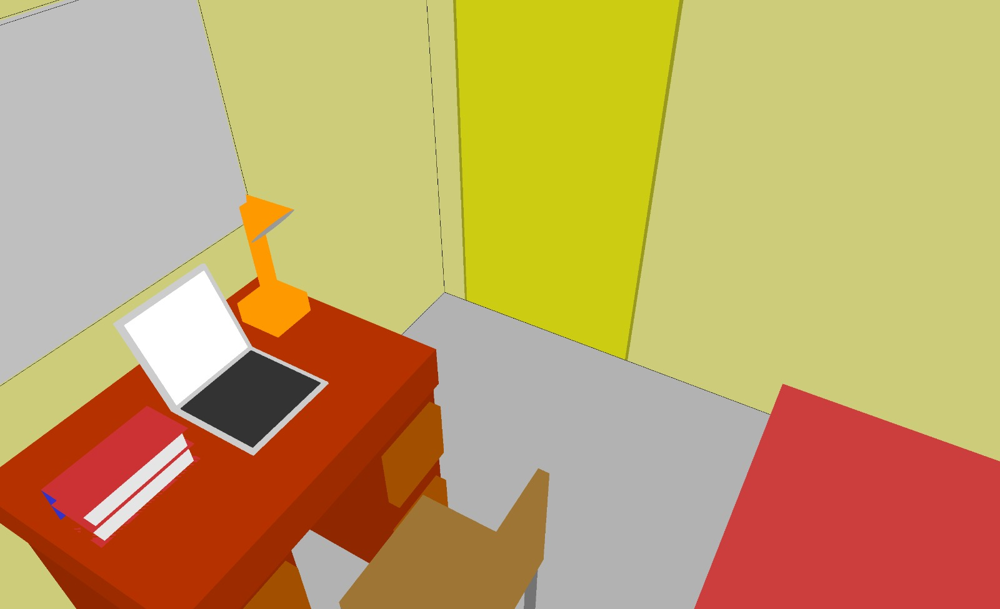
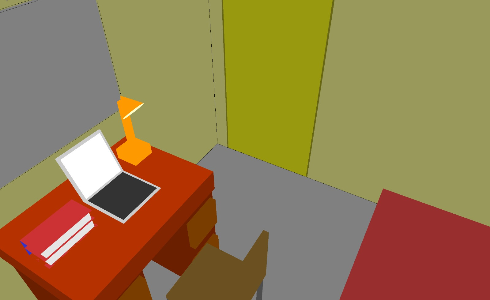
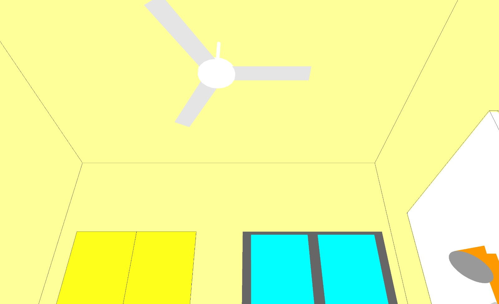
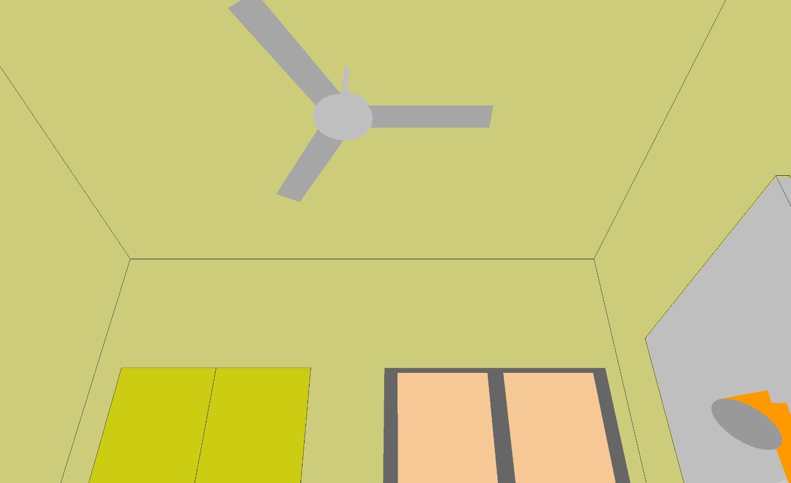
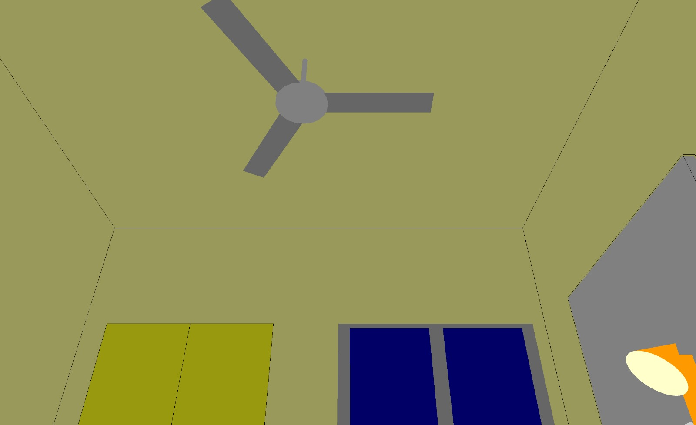

Computer Graphics - Assignment 2
Title: Scene Creation and Navigation
This project is made by:
ARCHIS SAHU - 2020A7PS1692H
KUSHAGRA VERMA - 2020A7PS0225H
Description
In this project we recreate our own hostel room with the help of openGL primitives and use openGL transformations to put the props used at the right place. We also navigate our scene by panning, zooming, and rolling the camera.
Run Instructions
To run the program, run the following commands
cd gl-code
source runner.sh
- use the W,A,S,D keys to PAN
- use the Z key to ZOOM OUT and X key to ZOOM IN
- use the ARROW keys to ROTATE scene
- use the I,J,K,L keys to ROLL camera
- mouse-click to change time of the day
Results



Algorithm Description
main.cpp
It sets up a simple 3D room scene using OpenGL and GLUT. It creates a window, initializes scene handling, and defines functions for rendering, reshaping, handling special keys, keyboard input, and mouse clicks. The code allows for interactive navigation in the 3D room environment.
Scene.h
The `Scene` class orchestrates a 3D room environment in OpenGL and GLUT. It is where the functions to navigate through the scene are hosted. It meticulously manages various aspects of the scene:
- `renderScene`: It orchestrates the rendering process. This function adjusts the viewpoint, rotation, and translates the camera, making it the central hub for visualizing the 3D room.
- `reshape`: Responsible for reshaping the window when changes in width and height occur. This function ensures that the visual representation adapts properly to different screen dimensions.
- `specialKeys`: This function controls scene rotations. When arrow keys are pressed, it determines whether to roll the scene clockwise or counterclockwise along the X or Y axis.
- `keyboardKeys`: It handles keyboard input for panning, zooming, and camera rolling. Depending on the key pressed, the function interprets instructions to move the camera up, down, left, right, zoom in, or zoom out.
- `mouseClick`: This function caters to mouse interactions, particularly when the left mouse button is clicked. It triggers a change in the time of day within the room, offering a dynamic and interactive element to the scene.
It does the above by utilizing the following glut/opengl library functions:
OpenGL Functions:
- glClear: Clears the color and depth buffer to prepare for rendering.
- glMatrixMode: Sets the current matrix mode (e.g., model-view or projection).
- glLoadIdentity: Resets the current matrix to the identity matrix.
- glRotatef: Applies rotation to objects in the scene based on specified angles.
- glTranslatef: Translates (moves) the camera to a new position.
- glViewport: Defines the viewport's position and size within the window.
- gluPerspective: Sets up a perspective projection matrix based on the window's aspect ratio.
GLUT Functions:
- glutInit: Initializes GLUT, providing command-line arguments.
- glutInitDisplayMode: Sets the display mode, including double buffering, RGBA color, and depth buffer.
- glutInitWindowSize: Defines the initial window size.
- glutCreateWindow: Creates the window with a specified title.
- glutDisplayFunc: Sets the display callback function for rendering the scene.
- glutReshapeFunc: Specifies the reshape callback for handling window size changes.
- glutSpecialFunc: Registers the special keys callback for processing arrow key inputs.
- glutKeyboardFunc: Registers the keyboard callback for managing panning, zooming, and camera rolling.
- glutMouseFunc: Sets the mouse click callback for handling interactive events.
- glutPostRedisplay: Requests the redrawing of the scene to reflect changes.
In essence, the `Scene` class serves as the control center for the 3D room, expertly managing rendering, view manipulation, and interactive features to create an immersive and engaging environment.
Room.h
This file hosts the Room class which essentially has the functions to draw the components of the room and correctly position the props using openGL transformations. It does show using the following functions:
Transformation Functions:
glPushMatrix() and glPopMatrix():
- Description: These functions are used to manage the transformation state by pushing and popping matrices from the stack. They allow you to isolate transformations, so changes affect only specific parts of the scene.
- Description: This function applies translation to the current matrix, moving objects in the specified direction along the x, y, and z axes.
- Parameters: x, y, and z represent the translation values along the x, y, and z axes.
- glRotatef(angle, x, y, z):
- Description: This function applies rotation to the current matrix, rotating objects around a specified axis by the given angle in degrees.
- Parameters: angle is the rotation angle, and x, y, and z define the axis of rotation.
- Description: This function scales the current matrix, affecting the size of objects along the x, y, and z axes.
- Parameters: x, y, and z represent the scaling factors for each axis.
Object Creation/Drawing Functions:
- Description: This function sets the current drawing color to the specified RGB color values, which will be used for subsequent object drawing operations.
- Parameters: r, g, and b represent the red, green, and blue color components.
- glVertex3fv(vertices[vertexIndex]):
- Description: This function specifies a vertex for creating geometry by defining its coordinates. It's part of the process of defining the geometry of objects to be drawn.
- Parameters: vertices is an array containing the vertex coordinates, and vertexIndex is the index of the specific vertex to be used.
- glBegin(mode) and glEnd():
- Description: glBegin marks the beginning of a group of vertices to be drawn, and glEnd marks the end. These functions help define the boundaries of geometric primitives (e.g., polygons) to be drawn.
- Parameters: mode specifies the type of primitive to be drawn (e.g., GL_QUADS, GL_TRIANGLE_FAN).
- glutSolidCube(size), glutWireCube(size), glutSolidCone(base, height, slices, stacks), glutSolidSphere(radius, slices, stacks), glutSolidTorus(innerRadius, outerRadius, sides, rings):
- Description: These functions are responsible for creating and drawing 3D objects such as cubes, cones, spheres, and tori. They define the appearance and geometry of the objects to be drawn.
These functions work together in OpenGL/GLUT applications to transform and render 3D objects within the 3D scene. Transformations modify the position, orientation, and scale of objects, while object creation and drawing functions specify the visual characteristics of those objects and their placement in the scene.